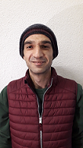

Yusuf Bayraktar
gitHub profile

studies
- 1990-1994: Minur Nurettin Selcuk Grundschule, Istanbul
- 1995-1997: Yesilbag Mittelschule, Istanbul
- 1998-2001: Ilke Gymnasium, Istanbul
- 2001-2003: Bilkent Universität, Physik, Ankara
- 2003-2005: Ankara Universität, Wirtschaft, Ankara
- 2005-2010: Bogazici Universität, Philosophie, Istanbul
work experiences
- 2005-2010: Nach-Hilfe: Mathematik, Physik, Geometrie
- 2008-2010: Bar keeper, Arkabahce, Istanbul
- 2012- : Bar keeper, Capribar, Basel, VolunteerJob
- 2016- : PutzfachKraft, FrauenOase, 2 Stunde pro Woche
language abilities
- Turkisch: MutterSprache
- Englisch: Fliesend, TOEFL Zertificated
- Deutsch : Fliesend, B2 Niveau Gut Bestanden
hobbies & entertainment
- Schach
- Basketball
- Lesen
- Sinema